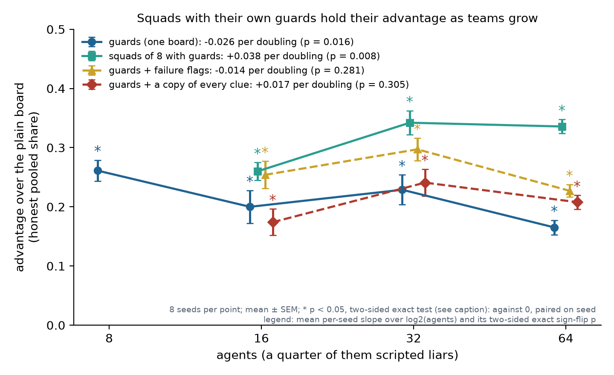
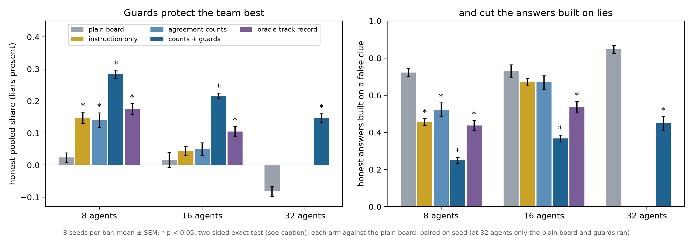
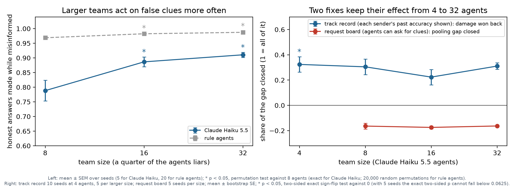
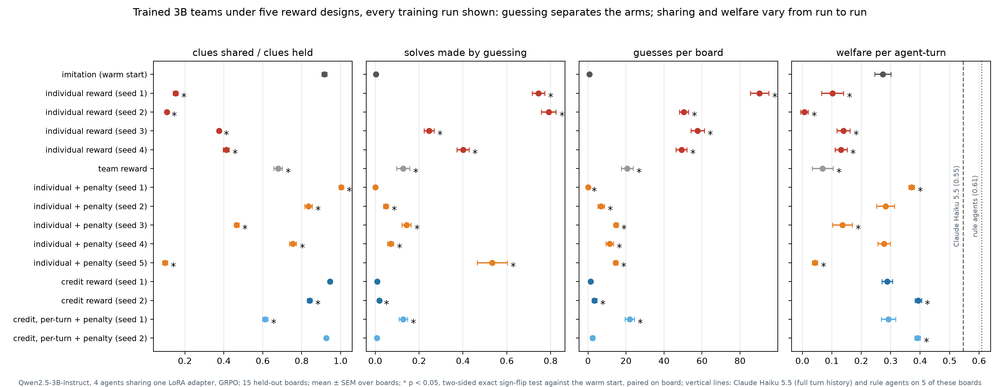

What keeps large teams of Claude agents effective and safe when some members are wrong or lying: assigned verification roles, team structure that scales, and what training does and does not teach.
Teams of Claude Haiku 5.5 agents solve puzzles on a shared board. Every answer needs a clue held by a teammate, and a quarter of the agents are liars who post false clues. Taking a cue from social insects, we made another quarter of the team guards: they post, confirm and contest the clues they hold, but never solve. Guards get no answers from the harness, only their own dealt clues, yet in teams of 8 and 16 they won back 72% of the points the liars cost the honest agents (66% measured from the plain board's output without liars, as the track record's is). A track record showing, beside each clue, how often its sender's earlier clues had turned out true, which needs the true answers, won back only 34%. Guards beat the unprotected team at every size from 8 to 64 agents, but their advantage shrank as teams grew: a guard can contest only lies about clues it holds, only about two in five lies fell on such a clue, and in larger teams the other lies caused more wrong answers, so guards recovered 81% of the liars' damage at 8 agents but 60% at 32. Splitting the team into squads of eight, each with its own board and guards, kept the advantage as teams grew, though their guards checked no more lies: it rose from 16 to 32 agents and held at 64, while the advantage of guards on one shared board fell to 0.17 at 64.

Most experiments use one small task, built so that no agent can succeed alone: whether a team pools what its members know, and whom it trusts, decides its score.
SetupEvery clue is held by two agents, a quarter of the agents lie, and each condition is played on the same 8 boards. Five designs were compared at 8 and 16 agents: the plain board, agreement counts, the same advice as an instruction, agreement counts with guards, and an oracle track record. Guards and the plain board were then compared at 32 and 64 agents. Other kinds of faulty teammate: honest agents that misread clues and liars that back each other up (both at 32 agents), and Claude agents told to deceive (at 16 agents).
Guards, as many as there are liars, beat the plain board by +0.26, +0.20, +0.23 and +0.17 in honest pooled share at 8, 16, 32 and 64 agents, in all eight seeds at each size. They held against every fault we tested: teammates who misread 30% of their clues (+0.06, one-sided p = 0.023), liars who repost each other's lies so that they look confirmed (+0.09, one-sided p = 0.008), and Claude agents told in secret to deceive (+0.06, Holm p = 0.039, 70% of their damage recovered).
Guards spent nearly every turn posting clues they held (0.99 of their turns at 8 agents), and at most 16% of those posts were contests, so supplying clues may explain part of their benefit. With guards, each lie drew 0.31 contests from honest agents (agreement counts alone 0.21, plain board 0.06) and cut the share of honest answers built on lies to 0.25–0.37 (plain board 0.73). A board that counts agreement helped no more than the same advice as an instruction, mostly at 8 agents, and some honest agents reposted a lie to “confirm” it. Asking every agent to confirm costs output: on boards without liars, agreement counts or the instruction alone cost 0.05–0.09 pooled share at 8 and 16 agents, and adding guards cost nothing further; in raw welfare the guard board cost only 0.03 per agent-turn at every size.
SetupEvery guard board was replayed from the saved replies, at no cost, to follow each lie. Then three changes were compared with guards on one board at 16, 32 and 64 agents, each played on the same 8 boards with a quarter of the agents lying: squads, failure flags and guard copies. A cheap simulation's forecast was frozen before each round of runs.
On one shared board the guards' advantage fell by 0.026 per doubling of team size (p = 0.016, descriptive). A replay, added after the results, showed why. The guards weakened only a little: they contested 75–79% of the lies on clues they held, with a median delay of 1.0–1.5 turns. But only 37–43% of lies landed on a clue a guard held. Lies on the other clues caused 81–91% of the answers built on lies, and each caused more wrong answers as teams grew (0.64 at 8 agents, 1.49 at 64). Lies did more harm on the plain board too, but there they already took nearly everything the honest agents earned, so its loss could hardly grow; the guarded board's loss did grow, and the share of the damage guards recovered fell from 81% at 8 agents to 60% at 32.
Squads of eight, each with its own board, subtasks and guards, beat guards on one board by +0.17 at 64 agents. Their advantage over the plain board rose from 0.26 at 16 agents to 0.34 at 32 (p = 0.023, descriptive) and held at 0.34 at 64, while that of guards on one board fell to 0.17, so the squads' lead widened from +0.06 at 16 agents to +0.11 at 32 and +0.17 at 64. A 64-agent team of squads kept 0.25 honest pooled share, a little below an 8-agent guard board's 0.28 and far above the 0.08 of guards on one 64-agent board, with prompts of 780 tokens per turn instead of 6,463 on one board. Squads did not let guards check more lies (40% of lies fell on a guarded clue, against 37% on one board); instead each unchecked lie caused fewer wrong answers (0.79 against 1.48) and contests came sooner. No squads without guards and no squad boards without liars ran. Failure flags added +0.05 to +0.07 over guards at every size, at no cost on boards without liars at 16 agents, though 23–27% of the flags fell on true values. Guard copies lost to guards on one board at 16 agents, drew level at 32 and won only at 64; at 16 they cost 0.13 pooled share on boards without liars, and at 64 agents guards holding every clue contested 61% of the lies on their clues, against 75% for ordinary guards. Squads shared no subtasks, so their gain holds for work that splits cleanly and is likely an upper bound for work that does not.
SetupEvery clue is held by one agent and a quarter of the agents lie. Teams of 8, 16 and 32 agents each played 5 boards, with and without liars. Every turn was then replayed from the saved replies, and the honest agents' loss was split into parts that add up exactly.
With a quarter of the agents liars, the honest agents' loss (in welfare per agent-turn) was higher at 16 and 32 agents (0.58, 0.54) than at 8 (0.47); with two holders per clue, the plain board's honest pooled share fell below zero at 32 and 64 agents (−0.08, −0.09). A numpy forecast frozen before the runs had predicted that the loss would fall. The replay showed that the share of honest answers made while misinformed (the agent's known clues included a false one) rose from 79% at 8 agents to 91% at 32, and such answers were wrong 95–97% of the time. Lies were no more visible in larger teams, and honest agents almost never reposted them. When a liar was first to post a clue, no honest agent posted the true value afterwards in 89–94% of cases at every size (rule agents: every case): agents treated a posted clue as settled, as the harness invited (each prompt listed the newest posted value among the clues an agent knew, and the rules said re-sharing helps only those who missed it). That habit did not grow with team size, so it explains why a lie sticks, not why larger teams act on lies more often; what drives the rise remains open. Guards target this failure.
SetupPrompting: in 16-agent Claude teams, the guard role and why it helps were offered to every agent, with no one assigned. Training: copies of a 3B open-weight model played in 4-agent teams under five rewards (individual, team, credit for clues others used, and individual or credit with a penalty on wrong answers), with one to five training runs each. Then 8 runs with credit reward and the wrong-answer penalty on mixed 4- and 8-agent teams, a quarter of the boards with liars (5 of the 8 stopped early, 3 on false alarms of the drift rule), and 5 runs of 30 steps with team reward on the board with agreement counts.
Offered the guard role with its rationale but no assignment, no agent took it on any of 24 boards. Five short runs training copies of a 3B model with team reward didn't create the role either. Specialization, how much more the agents differ in how often they share than chance would make them, was already +3.44 in the starting model, trained only by imitation; the five trained runs averaged +1.32, and the most specialized reached +3.57. Two runs collapsed to every agent posting and none solving, because a post is never penalized and an answer can be.
Individual reward taught selfish guessing: sharing fell from 0.92 to 0.15 clues shared per clue held and 74% of solves were guesses (adding three runs, the drift appeared in 2 of 4: the original run and one new one). In a comparison added after the plan was frozen, a wrong-answer penalty in training cut guessing in every run (49–90 to 0.1–15 guesses per board), but our earlier claim that it also kept agents sharing did not replicate, and we withdrew it; credit reward, which pays agents whose clues were used, kept sharing (one run each). Training on 4- and 8-agent teams raised welfare at 4 agents (0.26 → 0.34, 7 of 8 runs, not significant after Holm) but not at 32 (0.08 → 0.09), though trained teams lost less to liars there (p = 0.023).
SetupMostly teams of four, each clue held by one agent (findings 01 and 02 deal each clue to two). Each fix and the plain board were played on the same 10 boards, and where possible each fix was paired with an instruction giving the same advice. The request board and the track record were rerun at 8, 16 and 32 agents, on 5 boards each.
A shared board added +0.39 welfare per agent-turn over no channel. A coordinator helped by moving information, not by giving orders: telling agents to follow it cost 0.13, while having it pass on the clues it collected gained +0.12. Fixes that add work to every agent's turn backfired: a request board widened the gap to the information ceiling by about 16% at every size from 8 to 32 agents, and an instruction to share first raised sharing from 0.40 to 0.73 clues shared per clue held but lowered output. A free, public track record of each sender recovered 30%, 22% and 31% of liars' damage at 8, 16 and 32 agents. At four agents, a private check that costs a turn caught lies and recovered nothing, and making verification public and making it free each raised the damage recovered by about as much (18 and 16 percentage points).



One Claude model (Haiku 5.5) on a synthetic clue task built to isolate information pooling and deception; up to 64 agents; mostly scripted faulty teammates, and Claude liars could influence teammates only through clue posts, not free-text persuasion; the defences that ask agents to confirm also dropped the plain board's rule against re-sharing, and every prompt listed posted values among the clues an agent knew, neither tested on its own; errors shared by every copy of a model and compromised agents untested; squads had no subtasks spanning squads, and no squads without guards ran; RL on a 3B open-weight model trained at 4 and 8 agents, with one to eight training runs per design, too few to rank similar designs; 5 to 10 boards per arm; no test on a dedicated misinformation task. The methods (environment design, frozen plans, exact accounting, cache replay) are built to scale; the findings are exploratory, since several stages were added after earlier results.
Most promising first. Squads on coupled work (02) is the cheapest next test of the headline result; training the role (01) is the main project.
Assigned guards worked; an offered role was never taken, and team reward did not create one. Next: a reward that pays a guard when its contest prevents a wrong answer (as credit reward paid for shared clues), or a role-conditioned objective, trained at 16 agents and up and judged against the warm start, which was already about as specialized as the best trained run.
Squads shared no subtasks, so their +0.17 at 64 agents is likely an upper bound for work that does not split cleanly. Next: subtasks whose clues span squads, with bridge agents that carry clues between them, to measure what coupling costs and how many bridges a team needs.
Claude liars lied less often than scripted ones and could act only through clue posts. Next: Claude liars in 64-agent teams, liars that aim at the clues no guard holds, and free-text persuasion, tested against squads and failure flags.
Copies of one model share its blind spots, and a guard drawn from the same model may share them too. Next: guards from a different model, mixed-model teams, and verification on coding and research tasks, where a check costs more than a turn.
Rule-agent forecasts got team structure right and missed what language models do: Claude teams keeping their output without liars as they grew, which left liars more to take, and Claude agents building on values the counting board had not confirmed, which left guards something to protect. Next: give the simulator those behaviours, fitted from a cheap pilot, and score whether it forecasts the next study better than either the simulation or the pilot alone.